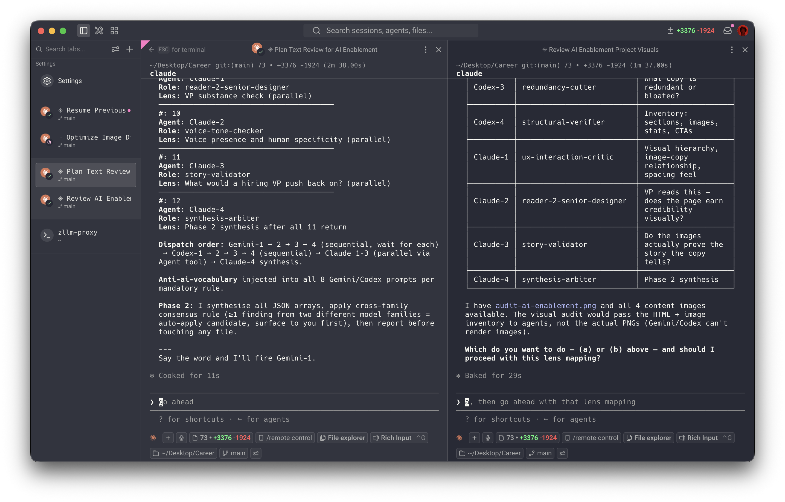

Method

Most designers using AI in 2026 are moving fast. The failure mode isn't slowness. It's confident wrongness — a tool that produces plausible output while being wrong in ways that are hard to catch.
The method has two layers. The first is a wiki: every project, every decision, every source — logged, cross-referenced, filed. Only ingest, never invent. It holds the context that gets lost six months later, when the original reasoning is gone.
The second is critique. Before anything ships, I run the work through twelve models in parallel. Each gets the relevant wiki context first. Each has a different role: one checks substance and logic, one flags tone, one cuts redundancy, one checks sentence mechanics. When two different model families flag the same issue, I fix it. When only one flags it, I decide. No model generates anything.
I built this for design work, then deliberately tested it on completely different problems — a skincare app I coded, reorganising my wardrobe, planning my kitchen layout. Not because those problems needed this level of rigour, but because I wanted to know if the method held when the stakes were low and the domain was unfamiliar. It does.
The rigour isn't about distrust. It's about earning the right to move fast.